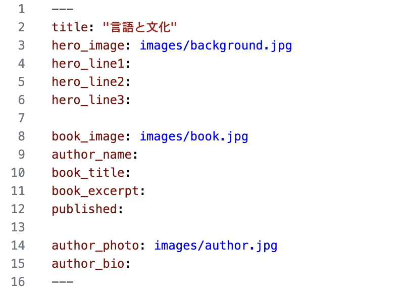
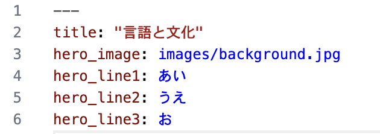
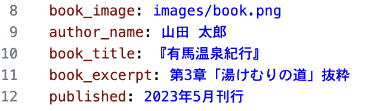
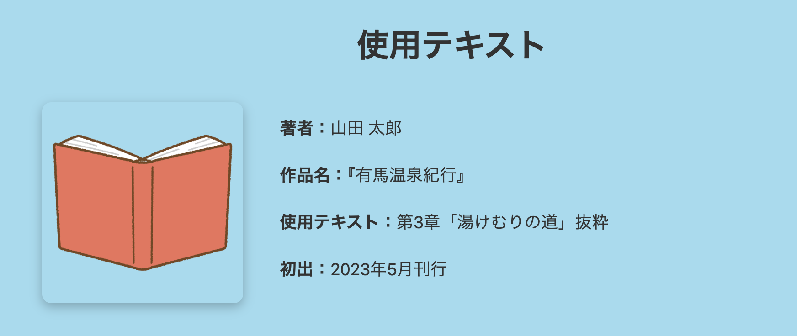
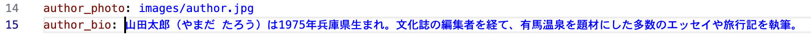
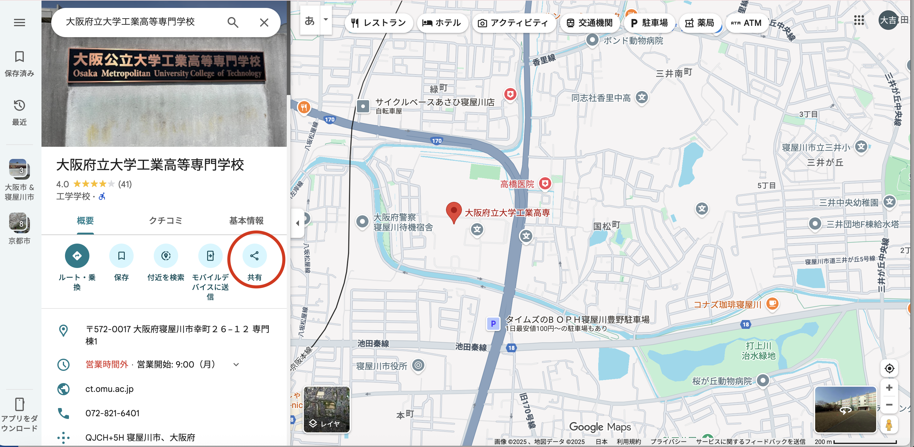
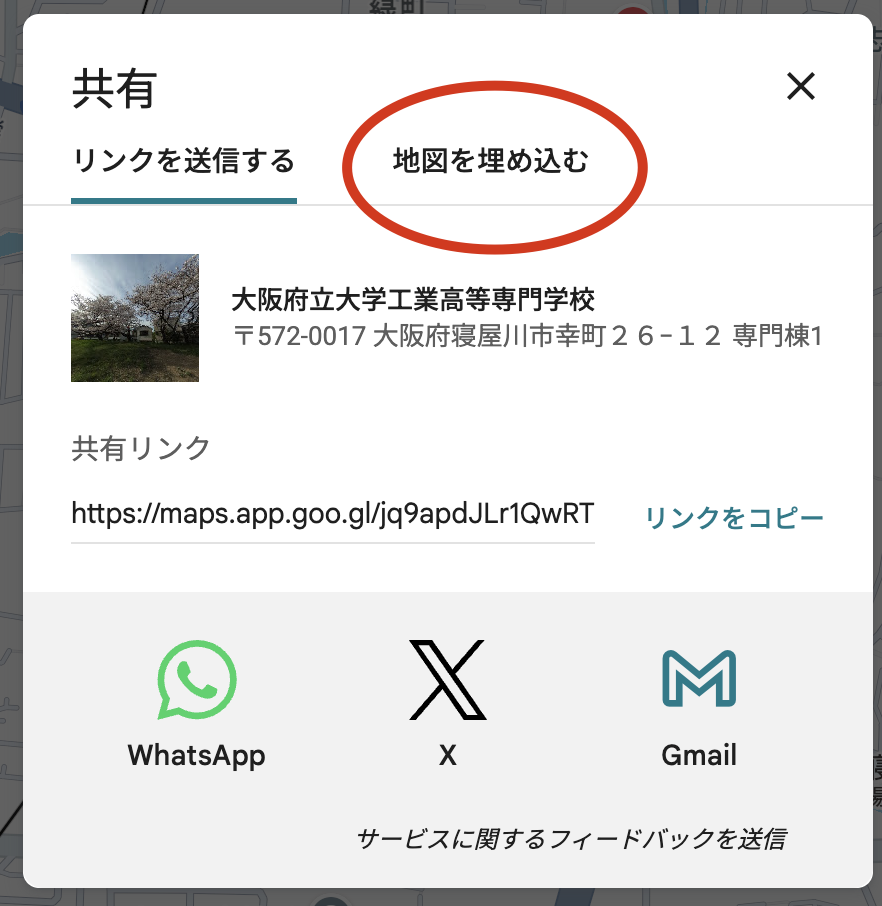
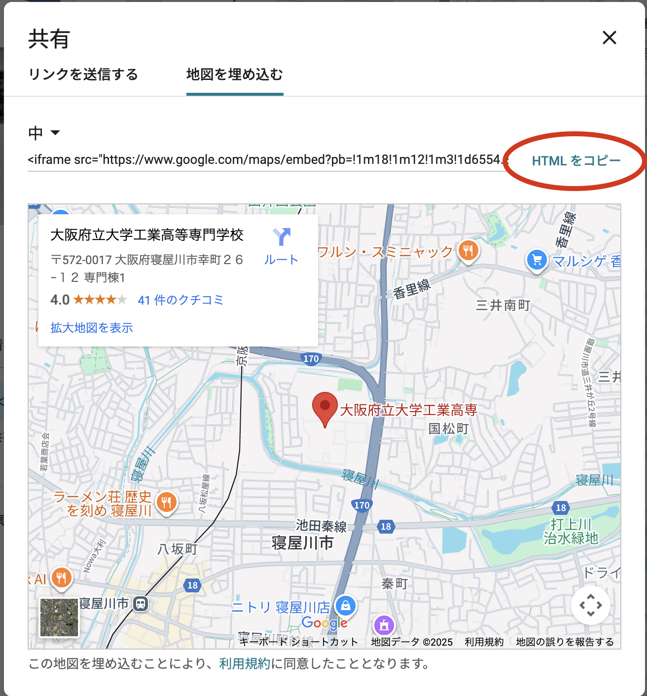
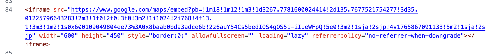

1. はじめに
本研究は５年メカトロニクスコース（2025年度），和田研究室所属の松本大吉が国語教諭の坂井先生の依頼のもと作成したものになります．
本研究では、「言語と文化」科目において実施されている現地調査を伴うガイドブック作成課題で、従来はPDF形式による提出が主でしたが、「実際に訪れた場所をGoogleマップで確認できるようにしたい」などの依頼を受けました．そこで，PDFに代わるWeb形式でのガイドブック作成の可能性を探っています．
目的としては，授業内で作った文章を書くだけで，コーディングを必要としない．また，テンプレートを作成し学習目的の統一と作成に対するハードルを下げることです．事前のアンケートでは「なぜ自由にレイアウトを変更できないのか」という意見がありました．テンプレートを用いることで学習目的の統一（評価の公平性）を測っており，あくまでも「言語と文化」の課題なので調査内容・考察・表現の質そのものや，いろいろなツールで見やすくするために，今回はこのような目的をたて研究を行なっています．
2. この教材でできること
この教材を読みながら作業を進めることで、”非エンジニア”でも次のことができるようになります．
Markdown の基本的な書き方が理解できる
Pandoc を使って Markdown → HTML に変換できる
提供されているテンプレート（template.html / styles.css）を使い、デザインされた Web ページを生成できる
画像や Google Map を Web ページに簡単に挿入できる
調査内容や考察を Web で発信するための基礎が身につく
3. 必要なファイルと準備（環境構築）
3.1 GitHub から教材ファイルをダウンロードする
次のボタンをクリックして ZIP ファイルをダウンロードする．
ダウンロードした ZIP を解凍し、任意のフォルダに展開する． 例：デスクトップ上に
web-guidebook-mainというフォルダが作成される．
3.2 Pandoc のインストール
Windowsを使用する場合はインストールをしなくて大丈夫です．
macOSを使用している場合は，下記のボタンをクリックしてください．（自動でダウンロードされます．）
ダウンロードされたファイルを選択し，手順に従ってPamdocをインストールしてください．
4. 作成手順
記述内容・作成項目は言語と文化の授業内で指定を受けた内容について記述します．大まかな作成手順は
Markdown（.md）に授業指定の内容を記述する．
Pandoc（コマンド）を使用しHtmlを生成する．
これだけです．授業内で考えた内容をテキストとして書き込むだけです．
コマンドを使用してHtmlファイルは上書きもできるので何度でも書き直しができます．
5. 作成上の注意
Web作成のために書き込むファイルは以下の二つになります．
- page1.md
- page2-4.md
上記二つの，Markdown（.md）ファイルはメモ帳やVScodeなどで開いてそこで作業，編集を行なってください．
文章内で画像を挿入することができます．挿入したい画像はimagesフォルダーに入れるようにしてください．（後ほど詳しく説明します）
また，私が作成したWebガイドブックのURLをこちら🔗に．加えて，記述したMarkdownファイルをこちら✒️に用意しています．ぜひ参考にしながら作成してみてください．
6. page1の作成
ここではPage1の作成て順位ついて説明します．Page1では，授業指定に則り，表紙/使用テキスト/著者紹介について記述していただきます．（テキストの画像はクリックすることで拡大表示できます）

※VScodeでの画像のため見た目が異なる場合がありますが内容は変わりません．
6.1 タイトルの変更
hero_line1,2,3は表紙となる場所のタイトルを書く場所になります．1,2,3と分けているのは，長いタイトルの場合にラインを分けてかけるようにするためです．１だけに書いても，２・３に書くだけでも問題ありません．自分の思う書き方を探してみてください．下に例の画像を添付しておきます．
⚠️「：」の後は半角スペースを空けてください．

6.2 使用テキストの変更
ここでは，使用テキストの情報を記述します．下記を参考にしてください．
⚠️「：」の後は半角スペースを空けてください． -
author_name:「著者の名前」
book_title:「作品名」
book_excerpt:「使用テキストの名前」
published:「初出」
また，これらの例の画像を下記に添付しておきます．

6.3 著者の紹介
ここでは，著者の紹介について記述します．
⚠️「：」の後は半角スペースを空けてください．
- author_bio:「ここに著者の説明を書いてください．」
下記に例の画像を添付しておきます．

6.4 画像の変更
表紙の背景画像と使用テキストの本の画像，著者の紹介のアイコン画像を自分の使用したい画像に変更することができます．「images」というフォルダの中に決められた名前の画像を入れておくことで表示することができます．今回は２つのパターンでやり方を紹介します．
１，画像ファイルの名前を指定の名前に合わす方法です．指定のファイル名は，background.jpg（表紙の背景画像），book.jpg(使用テキストの本の画像)，author.jpg（著者の紹介のアイコン画像）としてください．拡張子も間違えないようにしてください． ※拡張子が異なる場合は変換を行なってください．
２，もう一つのやり方は，画像のファイル名に合わしてマークダウンの方を変更するやり方です．「images/」の後に自分の用意した画像ファイルのファイル名を記入してください．拡張子も間違えないように記述してください．
7. page2-4の作成
page2-4では，授業での指定に則り，作品紹介/引用と説明/地図，自由研究，考察と参考文献を記述します．タイトルは基本的に変更しなくていいように，こちらであらかじめ記入してあります．ここではマークダウンでの詳しい書き方について解説していきます．ある程度自由に書くことができるので，マークダウンの書き方を下記に記しているのでそれを参考に作成してみてください．
7.1 タイトル・ページ
「—」から「—」で囲まれている部分でページ数とタイトルを決定しています（配布ファイルに記述済み）．授業指定に則り，基本的には変更しないでください．
「title」はブラウザでのタブの名前の部分を変更することができます．変更したい場合は，「title:」の後を変更することで表示も変わります．
7.2 ページの区切り
「＜！ーー PAGE_BREAK
ーー＞」はpage2-4.mdをpage2.html，page3.html，page4.htmlとそれぞれ生成するために必要な記述になるので必ず書くようにしてください．（配布ファイルに記述済み）．
⚠️「＜！ーー PAGE_BREAK
ーー＞」の前後には必ず１行ずつ空行を入れるよう注意してください．
<!-- PAGE_BREAK -->7.3 題目
題目を書くときは，「##_」（_は半角スペース）と半角で記述してから表示したいものを書いてください．
## １，題目## ・題目7.4 本文の記述
本文の記述を題目の後に行なってください．
改行を行いたい場合は半角スペースを２つ行最後に入れてから改行してください．
また，空行を１行入れて記述することで，この文のように少し行を離して表示することができます．
今回のWebのレイアウトは左右半分づつに分かれているようなレイアウトになっています．ですが，本文の前に「＜！ーーwideーー＞」を入れると幅広く表示することができます．選んで使ってみてください．
<!--wide-->7.5 GoogleMapの挿入
GoogleMapの挿入の仕方を画像とともに説明します．
１，Google Map を開いて自分の表示したい場所または経路を検索する．
２，「共有」→「地図を埋め込む」→「HTML をコピー」.
３，Markdown内にペーストしてください．また，前後に空行を入れてください．
   
GoogleMapにおいても＜！ーーwideーー＞」を書くことで幅広く表示させることができます．
7.6 画像の挿入の記述
画像はimagesフォルダーに入れておいてください．記述方法は下記の「〜」の部分に自分の画像の名前を拡張子まで入れてください．
⚠️前後には必ず１行ずつ空行を入れるよう注意してください．
また，画像挿入の記述を連続で書くことで，同じ場所で画像がスライドする表示にすることができます．

画像においても「＜！ーーwideーー＞」を用いることで，本文の下に幅広く表示されます．下記の記述でできます．
<!--wide-->
7.7 URLの挿入
参考文献や，本文でも外部サイトをリンクとして入れたい場合の記述方法です．２つの方法を示します．文字やURLは自分のものに変更して使ってください．（今は仮でGoogleのリンクを入れています）
１，リンク（https://www.google.com/?hl=ja） をこのように見えるように書く方法です．<>は半角で書くようにしてください．
リンク（<https://www.google.com/?hl=ja>）２，リンク というように文字をクリックすることでリンク先に飛ばす方法です．
[リンク](https://www.google.com/?hl=ja)8 Htmlの作成
新しく生成するときも．上書き保存したい場合も同じ手段で行います．作成されたHtmlをブラウザで開くことで閲覧できます．
8.1 Windowsの場合
run_all.batというファイルをダブルクリックするだけで．作成したMarkdown（.md）からpage1.html/page2.html/page3.html/page4.htmlが作成されます．
8.2 macOSの場合
１度だけ，ターミナルで下記のコマンドを入力して実行し．コマンドファイルに権限を与えます．
chmod +x run_all.commandその後は，run_all.commandというファイルをダブルクリックで大丈夫です．
8.3 生成後
HTMLファイルを開けばWebとして閲覧することができます．
また，コードを触れる方は，自分でコーディングして好みのWebを作り上げてください．
9 最後に
今回は卒業研究としてこのプロジェクトに取り組んできました．まだまだ至らないところが多々ありますが，よろしければ付随のフォームにてご意見を寄せていただきますと幸いです．
・フォームはこちら